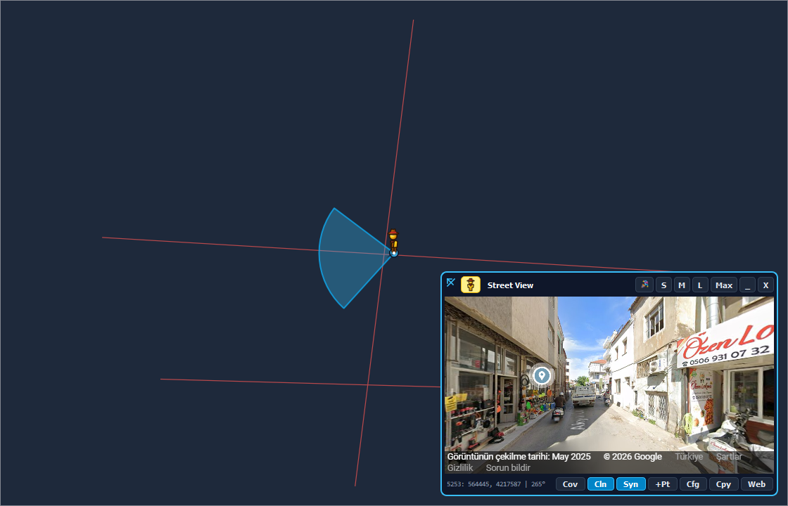
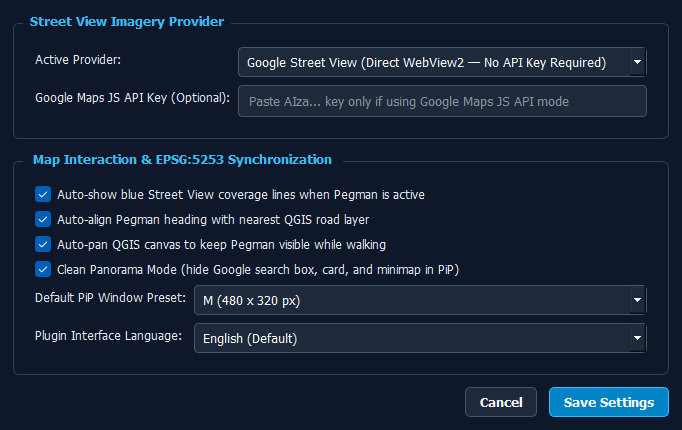

1. Geodetic Formulation & Spatial Core
Implemented in geo_utils.py :: build_fov_cone_polygon and snap_to_nearest_road_azimuth, all camera poses are projected bidirectionally between spherical WGS84 (EPSG:4326) and the metric Turkish National Reference Frame EPSG:5253 (TUREF / TM30). Geodesic destination offsets eliminate Transverse Mercator meridian convergence distortion along the viewing cone:
$$\phi_2 = \arcsin\!\Big(\sin\phi_1\cos\delta + \cos\phi_1\sin\delta\cos\theta\Big), \quad \lambda_2 = \lambda_1 + \operatorname{atan2}\!\Big(\sin\theta\sin\delta\cos\phi_1,\; \cos\delta - \sin\phi_1\sin\phi_2\Big)$$
When dropping Pegman onto a road without dragging an explicit aim vector, snap_to_nearest_road_azimuth transforms candidate LineString features to EPSG:5253, finds the closest street segment within $d \le 35\,\text{m}$, and aligns the camera azimuth:
$$\alpha = \operatorname{atan2}\!\Big(\sin(\Delta\lambda)\cos\phi_2,\; \cos\phi_1\sin\phi_2 - \sin\phi_1\cos\phi_2\cos(\Delta\lambda)\Big) \pmod{360^\circ}$$
2. Live QGIS GUI & Bottom-Right PiP Workflow

QgsMapCanvas in EPSG:5253 showing the yellow Pegman pin + FOV cone over Akyol Cd. (Tire, İzmir) synchronized with the resizable bottom-right Picture-in-Picture (PiP) Edge WebView2 Street View window.
StreetViewSettingsDialog supporting zero-key Google Street View Direct, optional Google Maps JS API keys, open-source Panoramax imagery, road-tangent snapping, Clean Panorama Mode, and EN/TR switching.3. Verified Academic Literature
| Citation | Title & Journal | Verified DOI |
|---|---|---|
| Karney (2012/2013) | Algorithms for geodesics — Journal of Geodesy, 87(1), 43–55 | 10.1007/s00190-012-0578-z |
| Anguelov et al. (2010) | Google Street View: Capturing the World at Street Level — Computer, 43(6), 32–38 | 10.1109/MC.2010.170 |
| Biljecki & Ito (2021) | Street view imagery in urban analytics and GIS: A review — Landscape and Urban Planning, 215, 104217 | 10.1016/j.landurbplan.2021.104217 |